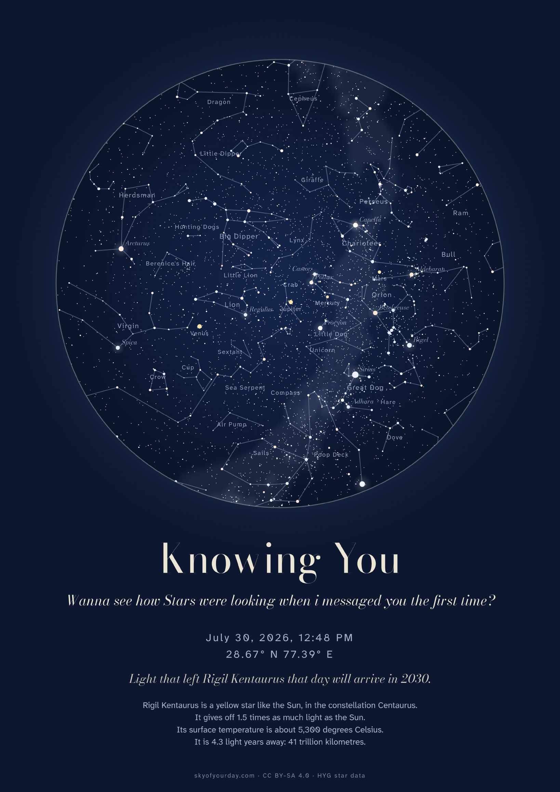
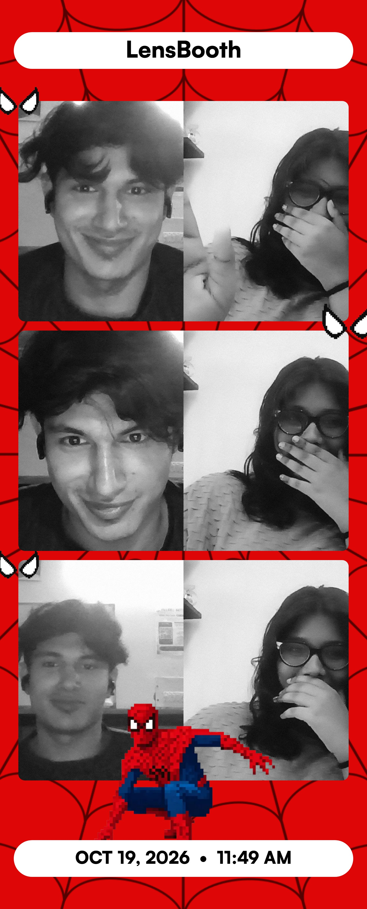
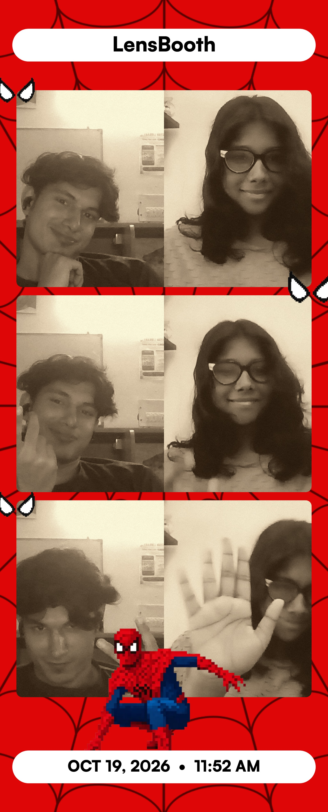
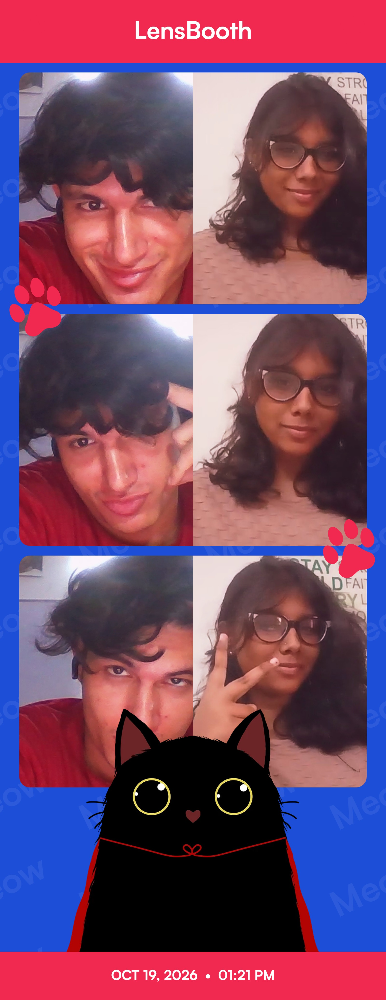

JULY 30, 2026 · 12:48 PM
One reel, one hello
I saw your profile in a reel’s likes and took a chance on saying hello. “I almost fell in love with your pfp.”
our first page
A little hello, remembered
beneath our first sky.
chapter two · how we met
Just the moments and words already saved in our story.
Keep turningJULY 30, 2026 · 12:48 PM
I saw your profile in a reel’s likes and took a chance on saying hello. “I almost fell in love with your pfp.”
THAT SAME DAY
Your train signal kept slipping, but the conversation didn’t. We picked it up again after my movie, then traded playlists and found all those little things in common.
AUGUST 1, 2026 · 12:01 AM
I called you my half-girlfriend. Your “Mhmmm” became one of the first moments that felt like us.
AUGUST 1, 2026 · 9:30 PM
Just hours after that little half-girlfriend moment, three letters said what we were both feeling.
OCTOBER 19, 2026
A few goofy frames, two screens, and one afternoon I’m so glad we saved.
THE DAY IT ALL STARTED
AyushLol these people. I almost fell in love with your pfp.
AmmuOhhh thank you! Btw where did u get my account from?
AyushInsta recommended somehow.
AyushYou are my half girlfriend ♥
AmmuMhmmm ♥
Ayushilysm ♥
Little did we know where this conversation would take us. ♡
chapter three · two cities, one moon
Ghaziabad to Chennai, with a whole sky between us—and one moon we can both look up to.

THE FIRST HELLO · JULY 30, 2026 · 12:48 PM
The chart was made for the moment and location already recorded on the original site: Ghaziabad, India.
Star map: Sky of Your Day · CC BY-SA 4.0 · HYG star data.
By royal decree, Ammu is hereby crowned ruler of sleepy texts, tiny jealousies, silly potatoes, and my entire heart. — your loyal Chellakussu ♡
chapter four · the little things
Photos, silly photo-booth strips, the voices we keep close, and one song cover—using the original site’s media.
OCTOBER 19, 2026 · ONLINE PHOTO BOOTH



little things to listen to
Choose a recording to play. Nothing starts on its own.
AMMU’S LITTLE VOICES
AYUSH’S LITTLE NOTES
FOR MY FAVOURITE SINGER
Your cover, saved like a little piece of home.
“Damn, I fell in love a little more.”
This one’s my favourite because it’s you. ♡
chapter five · just us beneath the same sky
Stay a little. There are small things to find in our night sky.
one moon · two windows · always us ♡Touch the moon, find a little star, or say hi to the sleepy cat.
follow this little lightinto the lilies →the last page · a little something for you
A little bouquet, gathered slowly—with all my love.
tap the bouquet · let a petal tell you something
NOVEMBER 19 · YOUR DAY
From one random reel to playlists, sleepy texts, and three months of us—how did one little hello turn into my favorite part of every day? I love how real and honest you are, how you share even the smallest things with me, and how you make me feel good about being exactly who I am. Your pretty voice, the way you quietly listen when something matters, your tiny jealous moments, and the way you still text me sleepy—I keep all of it close. Thank you for trusting me with your heart. I’ll keep meeting that trust with patience, honesty, and care. Happy birthday, my Potato Queen. En anbe, my silly potato queen.
all my love, ♡
Counting down to your day · November 19
our story is still ours